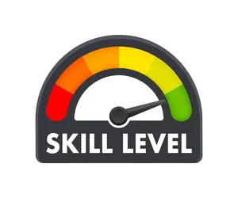

At ABC National School, we are committed to providing high-quality education that encourages critical thinking, creativity, and lifelong learning. Our academic programs are designed to help students achieve their full potential while preparing them for future educational and career opportunities.

The primary section focuses on building strong foundations in literacy, numeracy, communication, and social skills. Students are encouraged to develop curiosity, confidence, and a love for learning through engaging classroom activities.